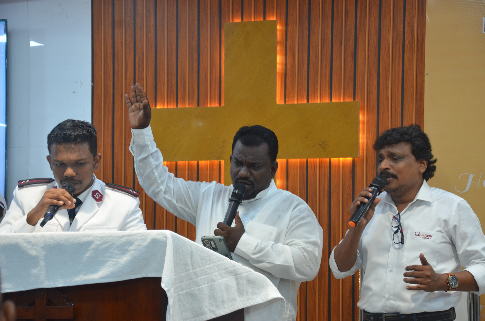
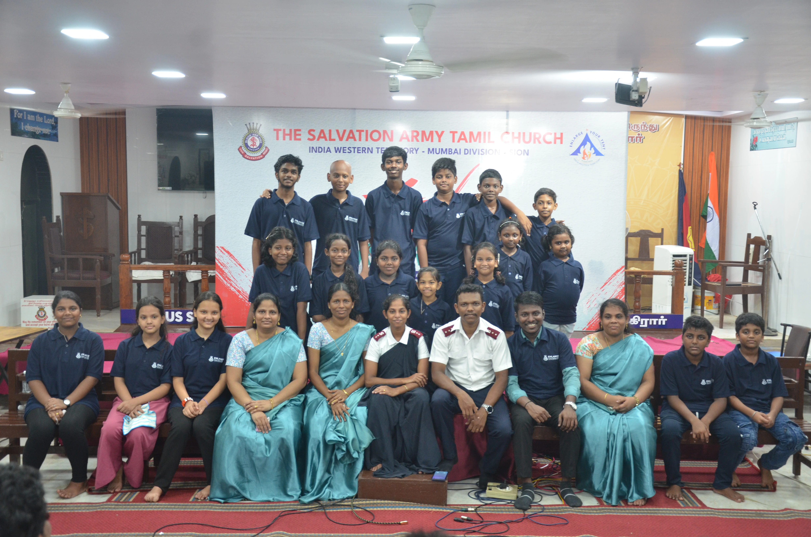
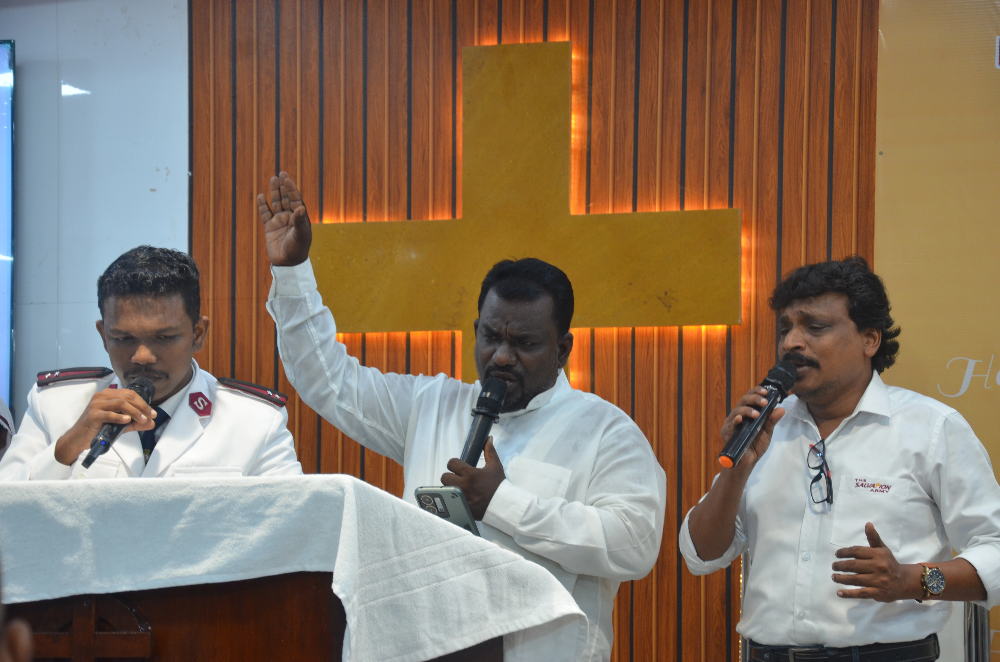
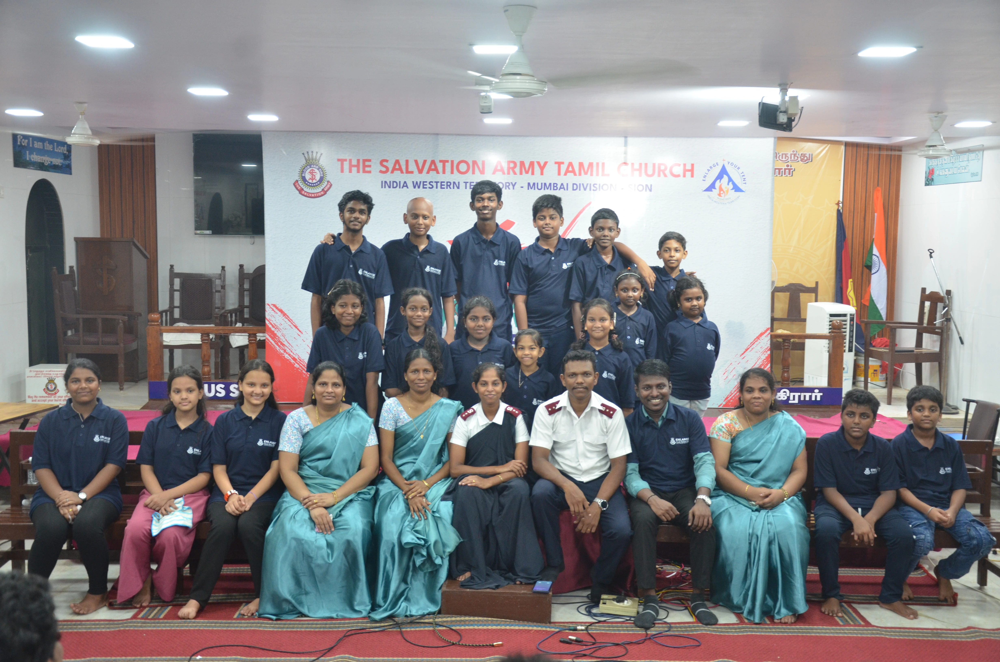

SAY Group: Empowering Youth Since 2008
A Legacy of Faith and Service
 



 =
= Since its formation in 2008, the SAY Group has been a vital part of the Salvation Army Church Tamil Sion, focusing on empowering youth through spiritual growth and community service initiatives. Our journey reflects a commitment to nurturing the next generation in faith and action.
Community Service Initiatives
The SAY Group actively participates in community service, organizing events such as medical camps that provide essential healthcare services to those in need. Our commitment to serving others reflects the core values of our faith and strengthens our community ties.
Youth Retreats and Spiritual Growth
Our youth retreats offer a chance for young members to deepen their faith and connect with one another. These retreats not only provide spiritual nourishment but also foster a sense of belonging and camaraderie among participants.
Saturday Prayer Gatherings
Every Saturday, we come together for prayer, offering a space for reflection and community bonding. These gatherings are vital for our spiritual growth, allowing us to support one another and seek guidance in our faith journey.
Christmas Crib Decoration
Each year, we create a stunning Christmas nativity crib that draws the admiration of our community, becoming a cherished public attraction.
Looking Ahead
As we move forward, the SAY Group remains committed to our mission of service, fellowship, and spiritual growth. We invite all young people to join us in our efforts to make a positive impact in our community. Together, we can continue to uplift lives and spread love.